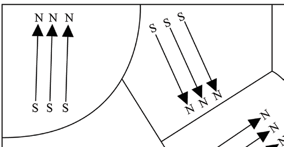
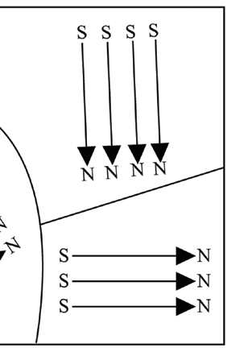
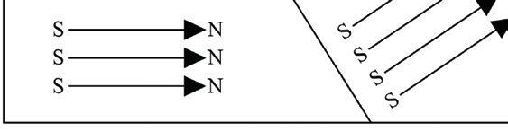

8. Moving coil meters.
A horseshoe magnet is used in voltmeters and ammeters.
It is an inbuilt part of these devices that enables the pointers to move in a direction of increasing voltage or current.
Exercise 3.1
1.
In a certain primary school, a teacher demonstrated how magnets work by giving students different objects like a nail, plastic ruler, coin, wooden pencil, and paperclip, along with a bar magnet.
The students were asked to identify objects that were attracted to the magnet and those which are not.
(a) Why could some objects be attracted to the magnet and others not?
(b) Which of the objects could be attracted by the magnet? What are their characteristics?
(c) Which of the objects could not be attracted by the magnet? Why?
2.
A magnet is cut into two equal pieces.
What happens to the magnetic poles of each piece, and why?
3.
A student argues that all metals are magnetic.
Do you agree or disagree?
Explain your answer with examples.
4.
You are asked to design a simple tool for separating magnetic materials from a pile of mixed waste at a recycling centre.
The pile contains nails, plastic wrappers, glass pieces, iron rods, and paper.
Describe the tool you would design and the method by which it operates.
Magnetisation and demagnetisation
Magnets are manufactured by aligning the tiny atomic magnets of a material.
The process of making a magnet is called magnetisation.
Likewise, demagnetisation is the process of destroying or removing the magnetism in a magnetised material.
Magnetisation
The atoms of most materials act like tiny magnets called atomic dipoles.
If the material is not yet magnetised, its atomic dipoles randomly align, forming magnetic domains as shown in Figure 3.16.


